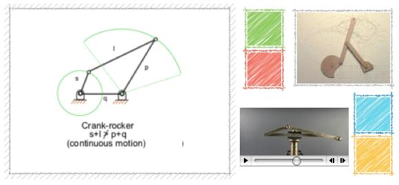
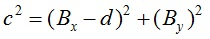
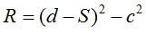
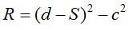

Position analysis of Non Grashoffour bar mechanism Theory
 Learning objectives
Learning objectivesAfter completing this simulation experiment one should be able to
- Determine the location CG of any given link in a Non Grashof four bar mechanism
- Determine the output link angle of a Non Grashof four bar mechanism for any given crank angle
- Calculate the transmission angle of a given Non Grashof four bar mechanism at any given crank angle
- Synthesis length of a Non Grashof four bar mechanism for a given conditions
Four Bar Mechanism Grashof Inversions Double crank mechanismCrank- rocker mechanism Double-rocker mechanism Parallel crank mechanismPosition analysis, Velocity analysis Acceleration analysis
Four Bar Mechanism

A four bar mechanism consists of four rigid link which are linked in the form of quadrilateral by four pin joints. A link that makes complete revolution is called crank, the link opposite to the fixed link is the coupler and forth link is a lever or rocker if oscillates or another crank if rotates. Here r1, r2, r3 and r4 are the links of the mechanisms.

Grashoff’s Law:
For a planar four bar linkage, the sum of the shortest and longest links cannot be greater than the sum of the remaining links if there is to be continuous relative rotation between two members.Inversions
 A mechanism has been defined above as a kinematic chain in which one of the links is fixed. From
the four bar mechanism, different versions of each of them can be obtained by fixing any one of
the links p, q l or s. Such different versions, which can be obtained by fixing any of the different
links, are called its “Inversions”. Many a time, a particular inversion of a mechanism may give
rise to different mechanisms of practical utility, when the proportions of the link lengths are
changed.
By this principle of inversion of a fourbar chain, several useful mechanisms can be obtained.
There are three inversions of four bar mechanisms, which are obtained by fixing different links of
the kinematic chain. They are:
a) Double Crank Mechanism
b) Crank Rocker Mechanism
c) Double Rocker Mechanism
A mechanism has been defined above as a kinematic chain in which one of the links is fixed. From
the four bar mechanism, different versions of each of them can be obtained by fixing any one of
the links p, q l or s. Such different versions, which can be obtained by fixing any of the different
links, are called its “Inversions”. Many a time, a particular inversion of a mechanism may give
rise to different mechanisms of practical utility, when the proportions of the link lengths are
changed.
By this principle of inversion of a fourbar chain, several useful mechanisms can be obtained.
There are three inversions of four bar mechanisms, which are obtained by fixing different links of
the kinematic chain. They are:
a) Double Crank Mechanism
b) Crank Rocker Mechanism
c) Double Rocker Mechanism
Double Crank Mechanism

A double crank converts rotary motion from a crank to a second crank or link in a different
plane or axis. It is also known as crank-crank, drag-crank or rotary-rotary converter. The links p,
q and l shown above rotate through one complete revolution. This is one of the first inversions of
four-bar mechanisms.
In this discussion, let,s call the link,s,the frame as the fixed link. We will call the link ,q, the crank,
,p, the coupler and ,l, the lever for now. Crank is not defined as the link, which is attached to the
driver shaft; rather it,s the link, which does a complete revolution. And in this configuration, as
there are two links, both q and l, which revolves completely about the hinged point on the frame,
both of them, is cranks.
The term is commonly used in automotive technology for the link in a four bar steering linkage
that converts rotation of a steering arm to a center link and eventually to tie-rod links which
pivot the wheels to be steered. A double crank is used when the steering arm operates in a plane
above the other links. The double crank converts the sweeping arc of the steering arm to linear
motion in the plane of the other steering links.
Crank-Rocker Mechanism
In a four bar linkage, if the shorter side link revolves and the other rocks (i.e., oscillates), it is called a crank-rocker mechanism. In this case, there is only a slight change, leave the smallest side and connect any of its adjacent side as the frame. Then (in figure) the smallest side ,s, will have full 360 degree revolution while the other link adjacent to the frame has only oscillating motion (link p). This kind of mechanism is hence called a crank-lever mechanism or a crank-rocker mechanism or a rotary-oscillating converter.
Double-Rocker Mechanism

A linkage in which no link undergoes entire 360-degree revolution but only oscillations is known as a double-lever mechanism. This linkage results when the shortest side in the mechanism is made the coupler. The other two links only get to oscillate in their place. A linkage in which the sum of the longest and shortest link is less than the sum of the other two sides, is known as a Class I mechanism, otherwise it,s Class II. This mechanism is achieved when it is Class II. It,s also called rocker-rocker mechanism, double-rocker mechanism or oscillating oscillating-converter.
Parallel Crank Mechanism

If in a 4 bar linkage, two opposite links are parallel and equal in length, then any of the links can be made fixed, regardless, the two adjacent links will always act as a pair of cranks, i.e. , both will have complete revolution about their joints on the frame. The use of such mechanism is made in coupled wheels of locomotives in which the rotary motion of one wheel is transmitted to the other wheel.
Position analysis of four bar mechanism

The position of the points on the links A (Ax, Ay) and B (Bx, By) The coordinates of the point A are found using trigonometry as follows:

 Eq.1
Eq.1Similarly coordinates of point B are found using the equations of circle around A and O4.

 Eq.2
 Eq.3
Eq.3 Eq.4
Eq.4where,

 


The link angles are given by